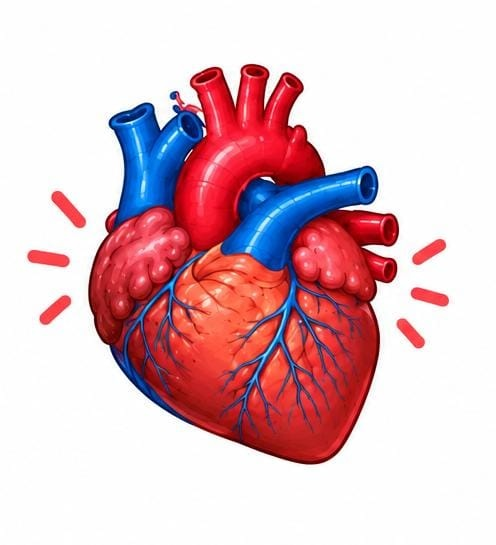
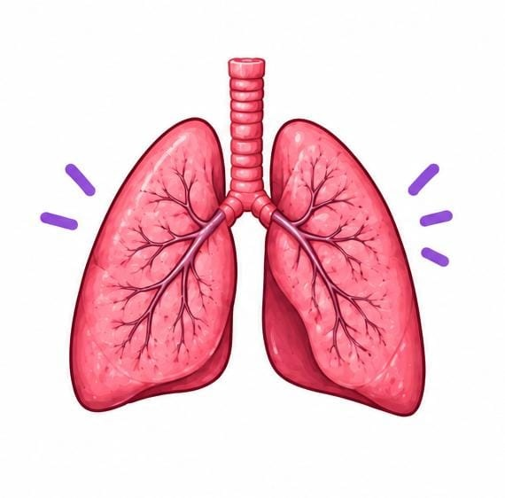
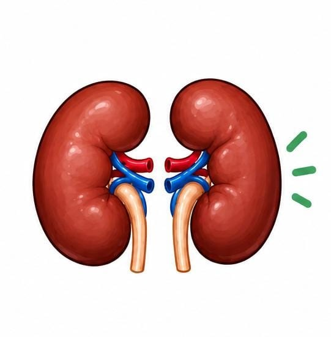
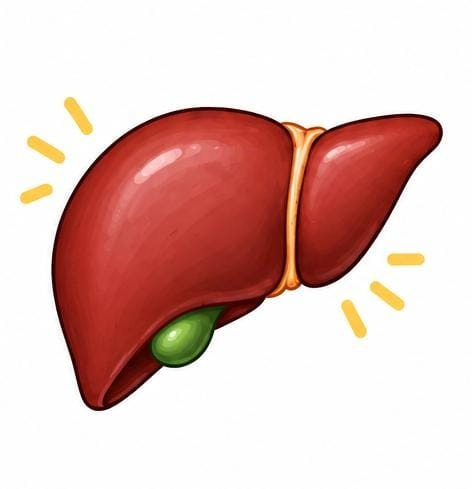
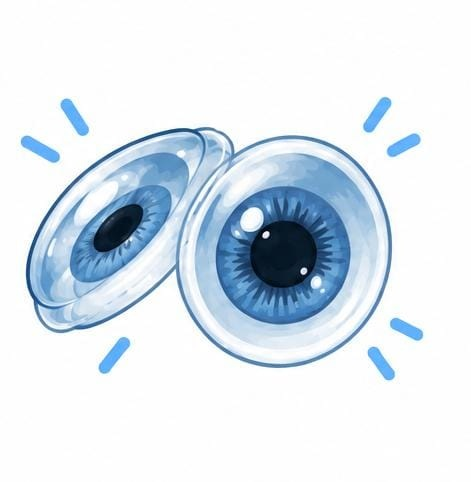
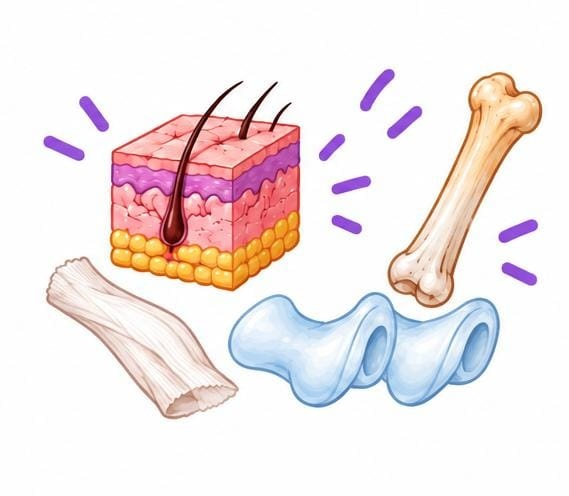

¿Qué es la donación de órganos?
La donación de órganos es un acto mediante el cual una persona decide donar órganos o tejidos para que puedan ser utilizados en un trasplante cuando se cumplen las condiciones médicas y legales correspondientes.
¿Por qué es importante?
Los trasplantes pueden ayudar a personas que padecen enfermedades graves y necesitan un órgano para continuar con su tratamiento.
Por eso es importante conocer el tema, informarse mediante fuentes oficiales y comunicar nuestra decisión a la familia.
¿Qué órganos y tejidos se pueden donar?

Corazón
Puede utilizarse en determinados trasplantes.

Pulmones
Pueden ser utilizados en trasplantes pulmonares.

Riñones
Son algunos de los órganos que pueden trasplantarse.

Hígado
Puede ser utilizado en determinados trasplantes.

Córneas
Las córneas también pueden ser donadas.

Tejidos
Existen diferentes tejidos que pueden donarse.
Algunas formas de ayudar
- Informarse sobre la donación.
- Consultar fuentes oficiales.
- Hablar con la familia sobre nuestra decisión.
- Conocer las formas de expresar nuestra voluntad.
- Compartir información responsable sobre el tema.
Donación en Reynosa
También puedes conocer información sobre establecimientos relacionados con la donación y los trasplantes en Reynosa, Tamaulipas.
Ver información de Reynosa